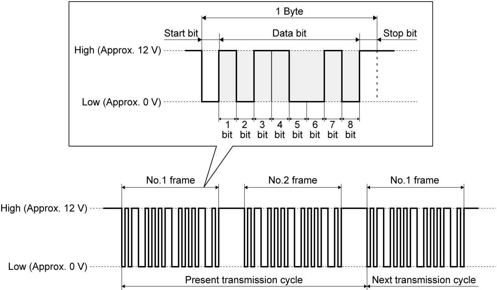
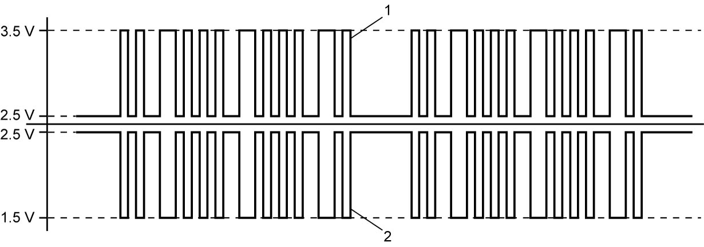

10H
| Communication System Description |
System Description
Communication between each control module and device is established through continuous input / output of ON/OFF digital signals to exchange various data items. Transmitting / receiving these data is called as serial communication interface.
Types of serial communication interface with protocols (communication standards) such as UART, CAN and LIN have been adopted for in-car communication system.
UART is used for communication between keyless start control module and steering lock unit.
LIN is used for communication between combination meter and parking sensor system control module, for communication between ECM and generator, and for communication between HVAC control module and auto A/C panel.
In addition, combination meter, P/S control module, keyless start / keyless entry control module, HVAC control module (auto A/C model), steering angle sensor, headlight auto leveling control module (LED headlight model), rain / light sensor (LED headlight model), 4WD control module (4WD model), SDM, TPMS control module (TPMS model), BCM, ENG A-STOP control module (ENG A-STOP model), ESP® control module, RBS control module (RBS model), TCM (twin clutch system model), select lever (twin clutch system model) and ECM are transmitted / received data through a twist pair of two communication lines (CAN High and CAN Low) connected through CAN communication. Data obtained by a specific control module can be shared with every control module.
UART and LIN Communication Signal
UART and LIN communication system is a serial communication system capable of transmitting multiple types of information using a single communication line.
Each block of data transmitted via the serial communication system is called a frame.
A frame contains multiple bytes, and each byte consists of a start bit, data bits, and a stop bit.
The data bit stream consists of 8 data bits that are transmitted in series, and each bit is assigned to a specific information item.
Switching between High and Low in each bit enables transmission of multiple types of information via a single communication line.
When multiple devices are connected, 1 transmission cycle includes more than 1 frame and the frame length varies depending on the protocol used.

 "Expand image")
CAN Communication Signal
CAN communication system is a serial communication system for transmitting multiple data items (values from sensors, control data and control signals) as ON-OFF digital signals through communication lines. This system uses two lines (CAN High and CAN Low) for the communication circuit to maintain high reliability even when used for high-speed serial communication.
Serial communication is established as shown below with 2.5 V as the reference level for both CAN High signal (1) and CAN Low signal (2). The range of CAN High signal is from 2.5 V to about 3.5 V and that of CAN Low signal is from 2.5 V to about 1.5 V. When both are at 2.5 V, signal is judged as OFF. When CAN High signal is 3.5 V and CAN Low signal is 1.5 V (that is, when the difference between High voltage and Low voltage is more than about 2 V), signal is judged as ON. For this reason, a feature of CAN communication signal is that the signal waveform between CAN High and CAN Low signals is symmetrical with respect to 2.5 V level. CAN communication fails when the symmetrical signal form collapses.

 "Expand image")